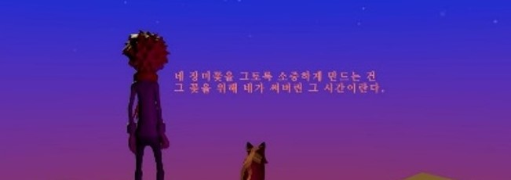
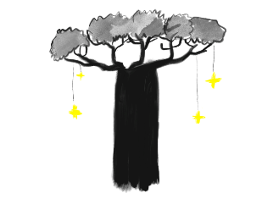
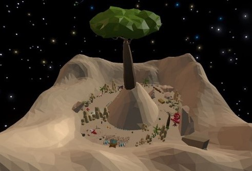
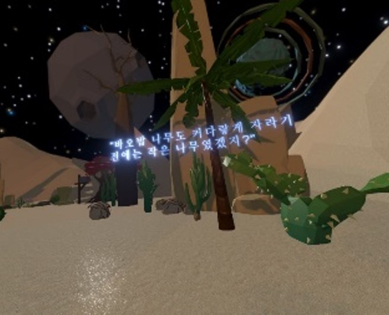
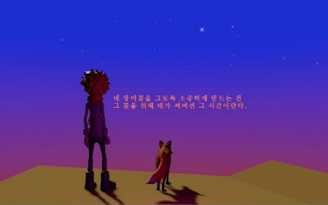

003 : Touching Music


개발기간: 2020. 08. 03 ~ 2020. 11. 03 (12주)
개발환경: Unity URP / GitHub/ Oculus Quest
주요 역할: 메인 맵에 대한 아이디어와 스케치를 진행, LowPoly 기반의 모델들을 이용하여 맵 구성
기여도: 3인 팀 프로젝트(40%)
제작동기: Touching Music은 어린 왕자가 지구를 떠나 자신의 별로 돌아가는
과정을 배경으로 한다. 책에서는 표현되지 않은, 결말 이후의 이야기를 우리만의 상상력으로 재탄생 시킨다. 신기한 VR 공간 속, 상상력을 자극하는 물건을 만지고 두드리며
스스로의 리듬을 만들어본다.
우주: 처음 이야기를 시작하기 전 광활한 우주에서 세상을 바라본다
지구(사막): 사막을 배경으로 하는 공간. 고장 난 비행기와 코끼리를 삼킨 뱀, 양이 든 상자를 뒤로 하고 어린 왕자가 길을 떠난다. 건조한 환경에 어울리는 타악기와 동물소리들이 주로 난다
장미 꽃밭: 사막을 벗어난 어린 왕자의 눈앞에는 장미꽃이 가득하다. 터치하면 비눗방울과 배경음악에 어울리는 소리들이 난다
어린 왕자의 별: 꽃밭을 지나면 어린 왕자의 별이 등장한다. 다시 어린 왕자의 별로 돌아와 노을을 바라보며 이야기를 마무리 한다.


